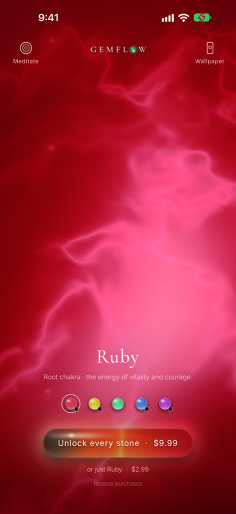

Frequencies · 396 Hz
396 Hz: the frequency of grounding
When you feel unmoored and the old fears return, 396 Hz is the tone many turn to. The deepest of the original Solfeggio frequencies, it belongs to the root chakra and the red light of ruby. Here is what it means, a simple ritual, and how to listen.
Where 396 Hz sits among the Solfeggio tones
The full list of nine, with where each came from: Solfeggio frequencies explained.
| Hz | Syllable* | Gemflow stone |
|---|---|---|
| 396 | Ut | Ruby · root |
| 417 | Re | — |
| 528 | Mi | Citrine · solar plexus |
| 639 | Fa | Emerald · heart |
| 741 | Sol | Sapphire · throat |
| 852 | La | — |
| 963 | later | Amethyst · crown |
* Syllables as assigned by Horowitz (1999). 963 Hz was added to the list later. Chakra pairings are the common modern ones and vary between sources.
The calling
When you feel unmoored
There are seasons when nothing feels solid. Old fears return at night, the ground seems to shift under every decision, and you cannot quite remember where you belong. 396 Hz is the tone many people turn to then. It is the lowest of the original Solfeggio frequencies, a deep, steady note that seems to settle into the body and stay.
The root
The root chakra and the red light
In the chakra tradition, the root sits at the base of the spine, where you meet the earth. It is the centre of safety, belonging and the simple courage to be here. Its colour is red, the colour of blood, fire and the first light of dawn. 396 Hz is the tone traditionally paired with it: a sound for coming back down into your body, and feeling held by the ground beneath you.
The meaning
Letting go of guilt and fear
In the Solfeggio tradition, 396 Hz carries the meaning of liberation: releasing guilt and fear, the old weights that keep us small. It is the first tone of the scale, and in a sense the first step of any inner journey. Before you can rise, you need roots. Many who listen describe a feeling of heaviness lifting, of breath dropping lower, of finally being allowed to rest.
The ritual
A 396 Hz grounding meditation
Sit on the floor if you can, or with both feet flat on the ground. Play 396 Hz softly. Breathe in and imagine a warm red light gathering at the base of your spine; breathe out and let roots grow from it down into the earth. With each breath, let something you are carrying sink into the ground and dissolve. Stay for ten minutes, then press your palms to the floor before you rise.
Gentle care
Listening gently
Keep the tone soft, low enough that you could speak over it, beneath music, singing bowls or rain if you like. Sound guidelines suggest keeping personal audio around 80 decibels or lower.
Source: WHO–ITU, Global standard for safe listening devices and systems (H.870, 2019)
How to listen
What does 396 Hz sound like?
Deep and warm, close to the G just above middle C: a low hum you feel in your chest as much as hear. Most people let it rest quietly beneath slow strings, singing bowls or rain, like a drone that holds everything else.
396 Hz in Gemflow
Ruby: the 396 Hz stone

Ruby in the Gemflow app. The light is rendered live, not a video.
In Gemflow, 396 Hz belongs to ruby: a living rose-red light on your phone that moves when you touch it and breathes with you. Open Meditate, and the stone glows and softens with each breath while 396 Hz hums beneath guqin played on its deep open strings and singing bowls. A small daily ritual for coming home to your body, and to the earth. Why the root has always glowed red: the root chakra, the red light that brings you home. More about the stone: ruby, the root chakra stone. Gemflow is a space for stillness, not a medical product.
Questions
What is 396 Hz?
A sound that vibrates 396 times a second, a little above the G over middle C. It is the lowest of the six original Solfeggio frequencies.
What is 396 Hz used for?
People use it as a low, steady tone for meditation and grounding. Horowitz’s 1999 list labels it “liberating guilt and fear”; that is a tradition, not a research finding.
What chakra is 396 Hz?
Most lists pair 396 Hz with the root chakra, at the base of the spine, traditionally linked to the colour red and to feeling grounded.
What note is 396 Hz?
Close to G4. In standard tuning (A = 440 Hz) G4 is 392 Hz, so 396 Hz is about 18 cents sharp.
Does 396 Hz work?
We found no study of 396 Hz itself. Calm sound and slow breathing help many people relax; there is no evidence that the tone removes fear or guilt.
Which crystal goes with 396 Hz?
In Gemflow, 396 Hz belongs to ruby, the red stone of the root chakra.
Sources
- Leonard G. Horowitz, Healing Codes for the Biological Apocalypse (Tetrahedron, 1999).
- WHO–ITU, Global standard for safe listening devices and systems, ITU-T H.870 (2019).
© 2026 Gemflow · Home · Solfeggio frequencies · 396 Hz · 528 Hz · 639 Hz · 741 Hz · 963 Hz · Chakra stones and frequencies · Ruby · Citrine · Emerald · Sapphire · Amethyst · Privacy